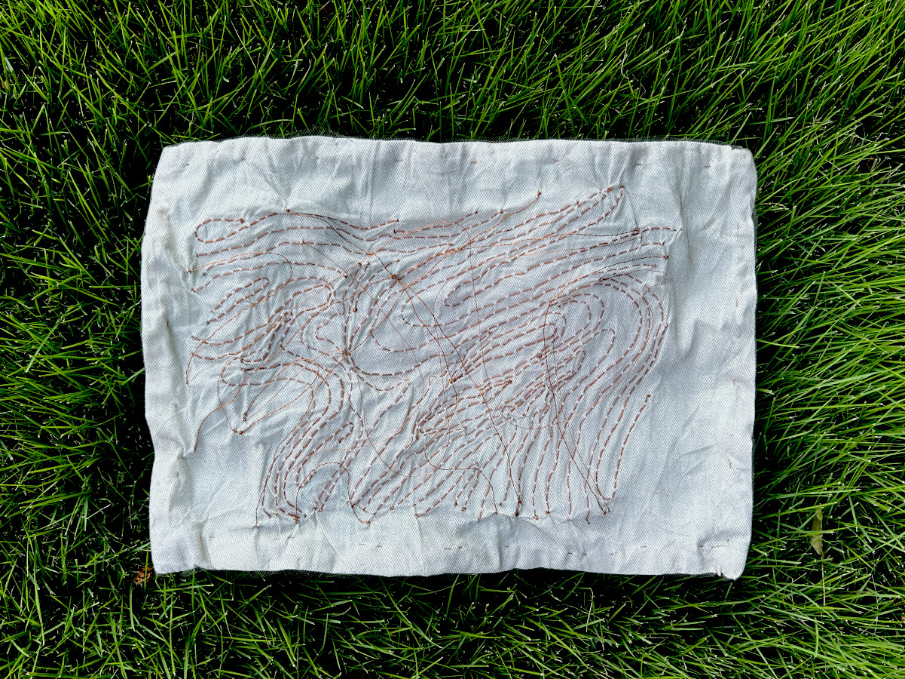
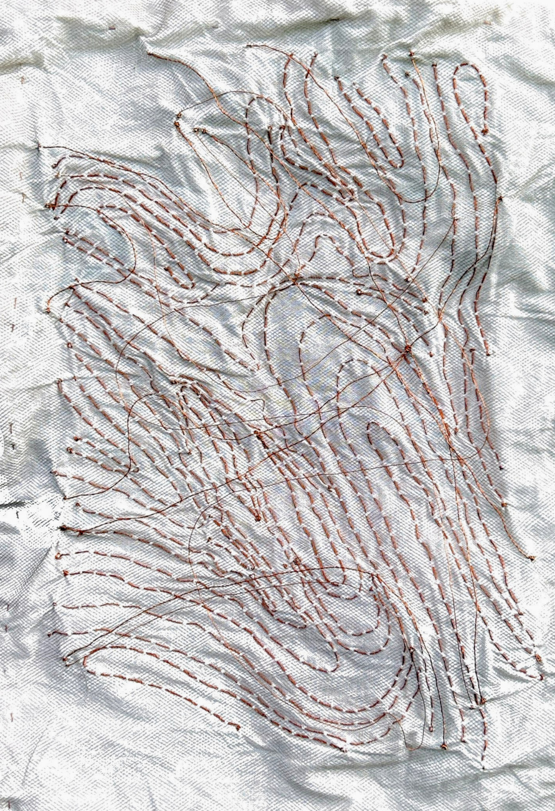
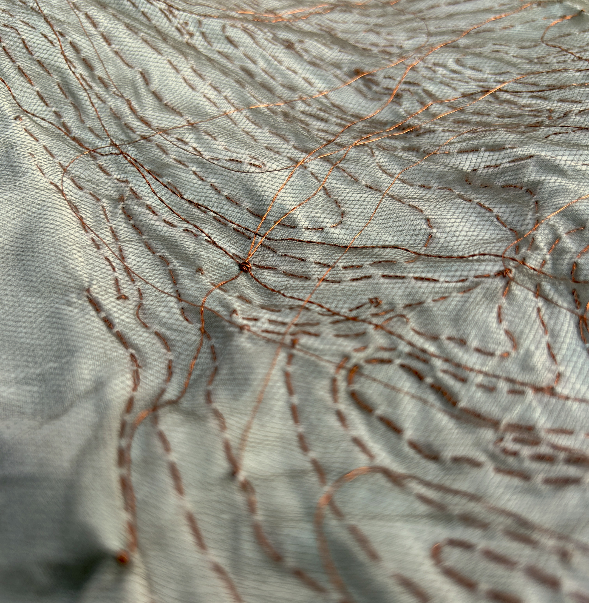

this is a map of the space between cosmic landmarks, 2026.

here, 2 layers of nylon tulle threaded carefully with copper pass quietly over heavily embroidered cotton muslin.
not quite a meeting of tectonic plates, but hinting at mirage.
i started this piece upon turning 29, 3 days after a solar eclipse,
and finished it 4 days after a lunar eclipse. there is a moment in the top layer
where 4 threads meet and knot together. there is a second moment where 4 threads
pause their paths to regard each other, in a clear space.
eclipse season is usually filled with confusion and change, whether
sudden and loud or slow and subtle. whether it's something we're conscious of
or not, cosmic shifts do hold sway over over us.
here, i look to the skies to guide me

